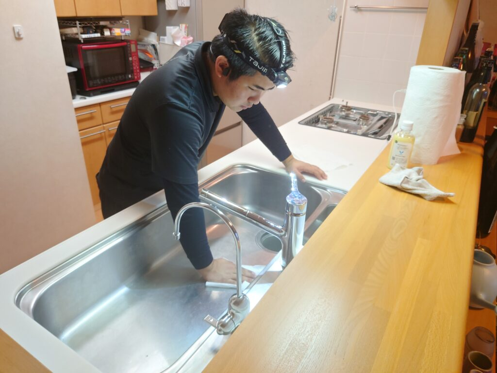
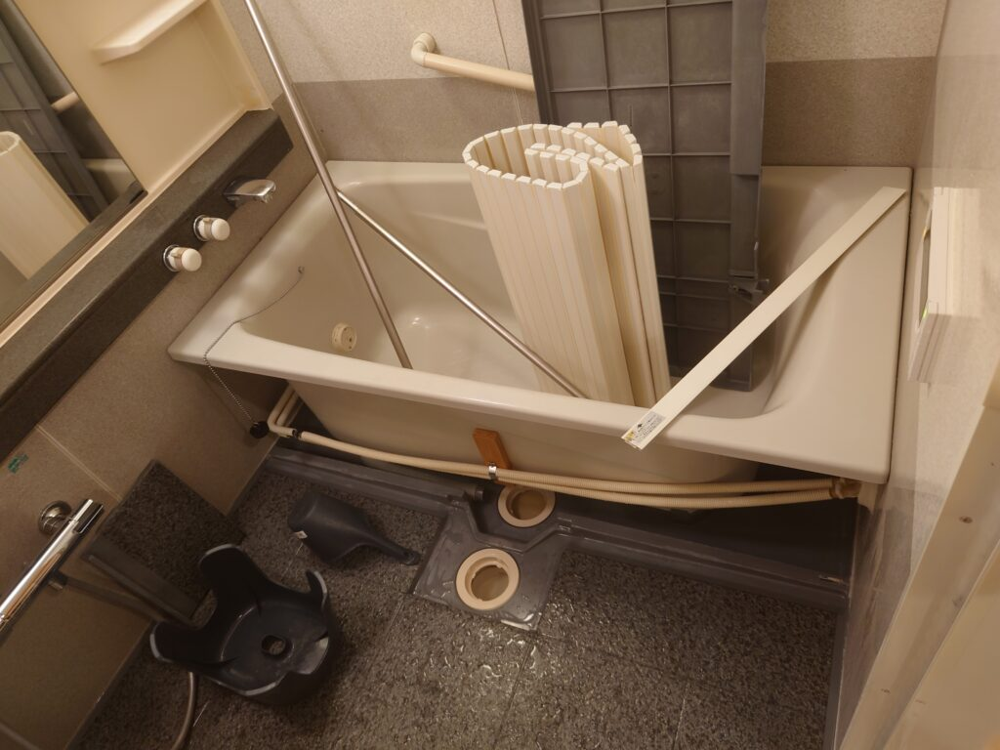
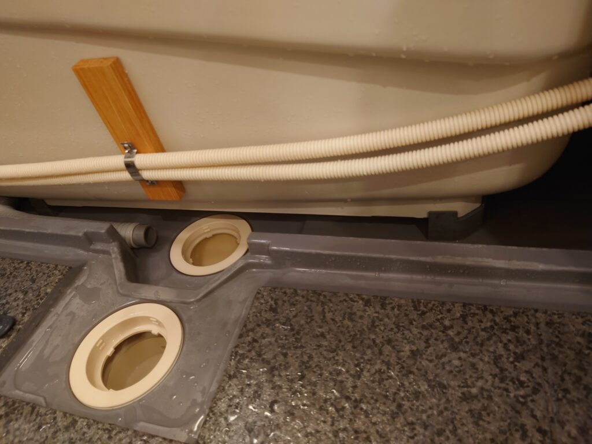
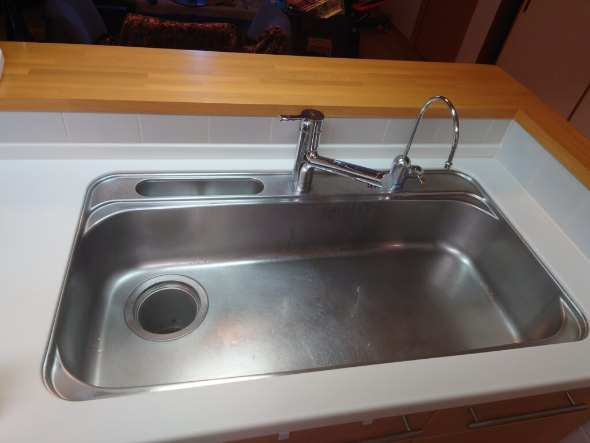
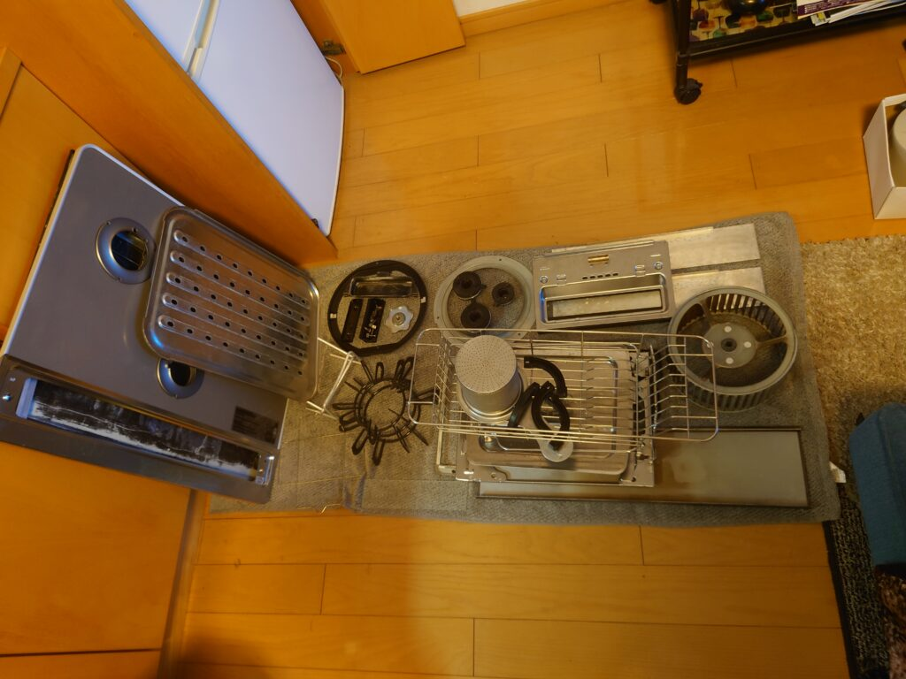
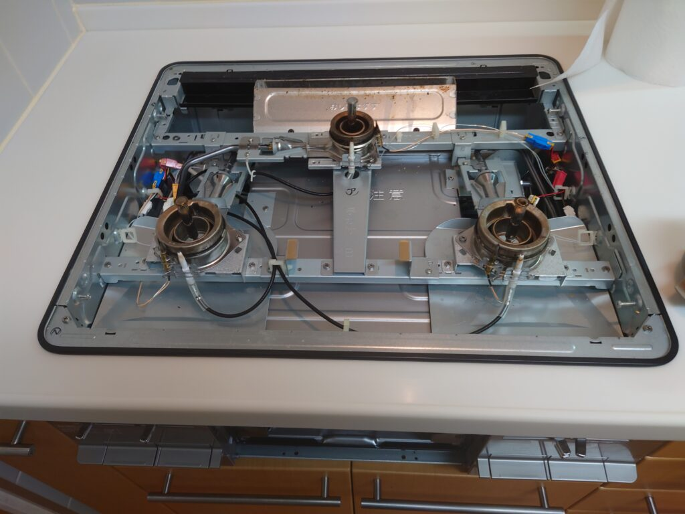
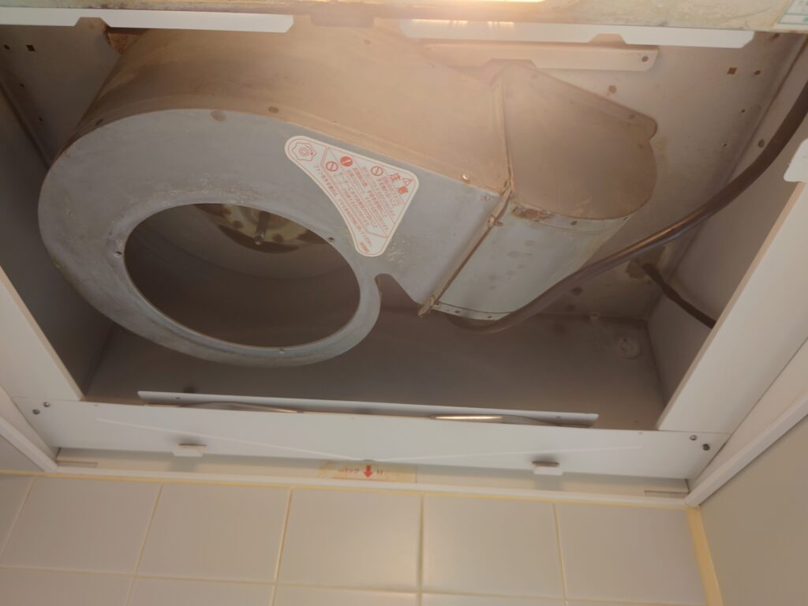

2022年12月20日 リピーター様水回りクリーニングをしました!  毎年連続リピーターさんの浴室は、一般の1回目クリーニングのお客様の浴室に比べて、エプロン内部、蛇口周辺、壁面、扉面の堆積汚れ、堆積スケールが付着し易いエリアが少なくより綺麗にクリーニング出来ます! エプロン内部の二重化排水口も高圧洗浄クリーニングで見る見る綺麗になります! キッチンシンク、蛇口周辺の従来なら堆積スケール、水垢が多量に付着するエリアも、一般の1回目クリーニングのお客様に比べて見る見る綺麗になります! DAIZENクリーニングメソッドで「オール分解洗浄クリーニング」をすると全てのパーツ類が輝きを取り戻します! 普段はなかなか掃除出来ないコンロ内部も隅々まで清掃クリーニングします! キッチン換気扇内部の堆積油汚れをクリーニングします。こちらも一般の1回目のお客様クリーニングに比べて、清掃がよりスムーズで綺麗になります。換気扇のシロッコは、わずか1年の使用でもしっかりと油脂汚れが付着していますので、専用薬剤塗布して高温処理後、洗浄クリーニングしてピカピカにします。 日本橋のH様 毎年1番早く、10月には年末の水回りクリーニングのリピート予約をして頂いております。12月末の混雑状況を予測して、早め予約で確実に毎年DAIZENメソッドクリーニングを実施していらっしゃいます!今年も（既に水回り各所のクリーニングポイントを私どもが心得て入るので）スッキリ綺麗になりました!一般の1回目クリーニングのお客様に比べて1時間以上早めに、そして綺麗に完了します。H様いわく「私の年末大掃除はこれでスッキリおしまい!」とのこと、お喜びでした。ありがとうございました!